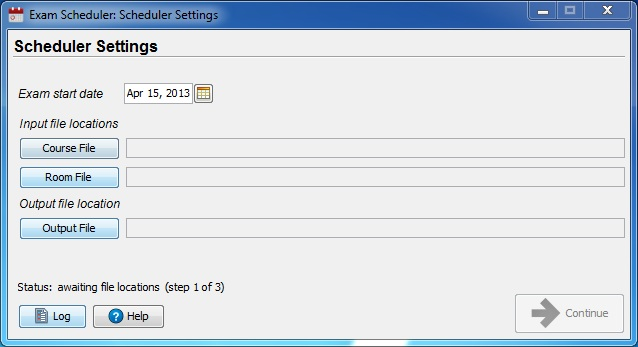
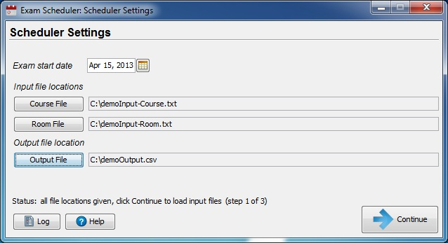
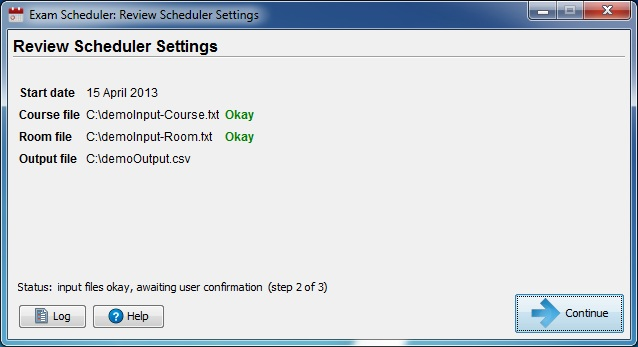
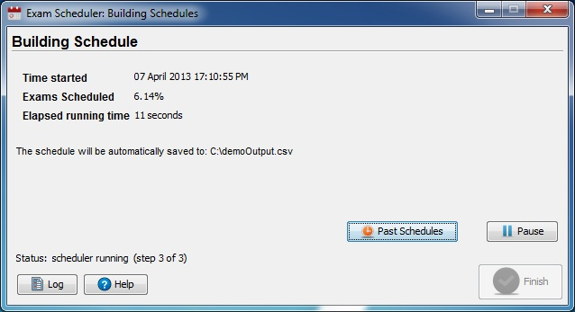
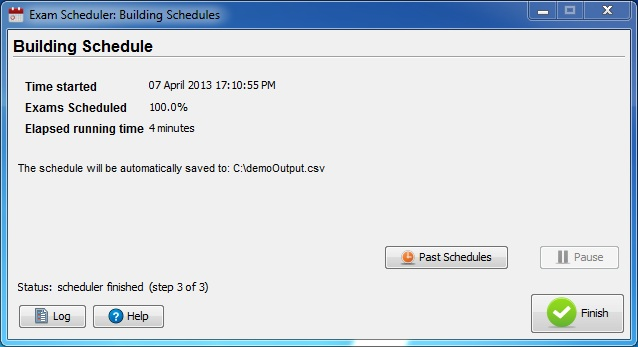

Help File
Panel One

The first panel allows the user to select the appropriate files to schedule the exams. The buttons labelled 'Course File' and 'Room File' both open a file selector dialogs when clicked. The user must also select a folder location and file name for the output file by clicking the button labelled 'Output File'; the extension '.csv' will be appended to the filename chosen. Once all three of the files have been chosen the user is ready to move on and should click the 'Continue' button as depicted in the bottom-right corner.

Panel Two

The second panel is responsible for verifying the two input files selected in panel one. The two status labels 'Exam file' and 'Room file' will indicate if there is a problem with any of the files. If the two statuses all return 'okay' then the user can again click the 'Continue' button, which will no longer be greyed out.
Panel Three

The third panel does the scheduling of the exams, the three labels indicate when the scheduling began, the percentage of exams scheduled, and the current elapsed running time. The 'Pause' button located above the 'Continue' button allows the user to halt (and resume) the scheduling of the exams. Once the scheduling is complete, the 'Continue' button will become clickable once again and should be clicked to move onto the final panel. The 'Past Schedules' button allows the user to view previously created schedules, as long as said previous schedules are in the same directory as the current schedule.
Panel Four

The final panel displays once the scheduler is finished running. This panel lets the user know where the schedule .csv file has been stored. Once the scheduler is finished running, a popup window will let the user view the completed schedule by opening the .csv in a text editor. This displayed file is also saved in the directory the user specified in previous panels (in this case, "C:\outputDemo.csv"). The 'Finish' button in the bottom right will now close the program.